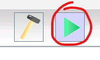
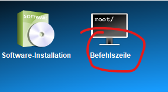
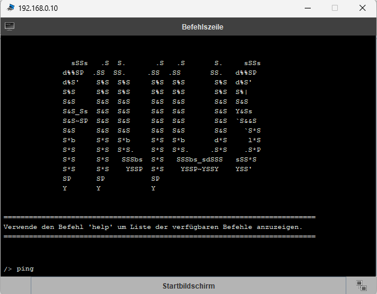
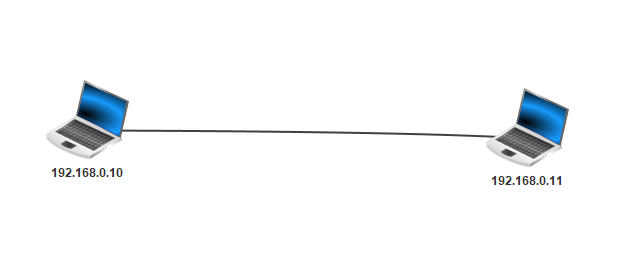

Du beginnst mit zwei Rechnern im selben Netz und verbindest danach zwei getrennte Netze über einen Vermittlungsrechner (Router). Dabei siehst du, warum ein Standard-Gateway nötig ist (→ 7.5) und wie die Subnetzmaske entscheidet, ob ein Ziel „im eigenen Netz“ liegt (→ 7.6).
Dateien
Ausgangspunkt: ip-adressen.fls – zwei Notebooks (192.168.0.10 und 192.168.0.11, Maske 255.255.255.0), direkt per Kabel verbunden.
Vergleichsdatei: gateway.fls – das fertige Netz aus dem Video.
Hinweis: Filius bedienen

Abb. 1: Mit dem Hammer baust du das Netz auf (Entwurfsmodus), mit dem grünen Pfeil startest du die Simulation (Aktionsmodus).

Abb. 2: Im Aktionsmodus öffnest du per Klick auf einen Rechner dessen Desktop. Bei neu angelegten Rechnern musst du die Befehlszeile zuerst über „Software-Installation“ installieren.

Abb. 3: In der Befehlszeile stehen u. a. ipconfig und ping zur Verfügung; help zeigt alle Befehle.
Grundaufgaben
Aufgabe 7.13.1: Vom Einzelnetz zu zwei Netzen AFB II

Abb. 4: Ausgangsnetz aus ip-adressen.fls
Öffne ip-adressen.fls, starte den Aktionsmodus und teste in der Befehlszeile von 192.168.0.10 mit ping 192.168.0.11.
Ändere im Entwurfsmodus die Adresse des zweiten Notebooks auf 192.168.1.20 (Maske weiterhin 255.255.255.0) und teste erneut. Erkläre das Ergebnis mit der AND-Verknüpfung.
Baue das Netz aus dem Video nach: Jedes Notebook hängt an einem eigenen Switch; beide Switches sind mit einem Vermittlungsrechner mit zwei Schnittstellen verbunden (192.168.0.1 und 192.168.1.1). Trage bei den Notebooks das passende Gateway ein.
Teste mit ping von 192.168.0.10 nach 192.168.1.20. Vergleiche dein Netz mit gateway.fls.
Trage beim Notebook 192.168.0.10 testweise das falsche Gateway 192.168.1.1 ein. Beschreibe und erkläre, was passiert.